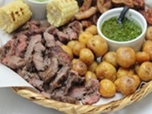

PRESENTACION
Mi nombre completo es Cristian Zapata Salazar y nací el 25 de agosto de 2006 en Cartago, Colombia. Actualmente tengo 17 años y estoy en una etapa emocionante de mi vida, donde estoy explorando mis intereses y preparándome para el futuro.
GUSTOS
COMIDA

Siento una verdadera pasión por todo tipo de platos que incluyan carne. Desde las jugosas y tiernas filetes de res, hasta los suculentos cortes de cerdo, pasando por las sabrosas chuletas de cordero o las deliciosas pechugas de pollo. No hay límite para mi amor por la carne, ya sea asada a la parrilla, cocida a fuego lento, o marinada con especias exóticas. La textura, el aroma y el sabor de la carne son simplemente irresistibles para mí. Disfruto explorando diferentes cocinas del mundo y descubriendo cómo cada cultura interpreta y prepara sus platos de carne de manera única. Desde los ahumados del sur de Estados Unidos, hasta los sabores intensos de la cocina argentina con sus famosos asados, cada bocado es una experiencia sensorial que me transporta a un mundo de placer gastronómico. Para mí, la carne no es solo alimento, es una fuente de satisfacción y deleite que nunca deja de sorprenderme y complacerme.
GENEROS MUSICALES
Mi pasión por la música se manifiesta a través de una amplia gama de géneros, pero hay tres en particular que tienen un lugar especial en mi corazón: el pop, el rock y la ranchera. Cada uno de estos géneros tiene su propio encanto y me cautiva de manera única. El pop, con su melodía pegajosa y letras emotivas, tiene el poder de levantarme el ánimo en cualquier momento. Desde las baladas románticas hasta los ritmos bailables, la diversidad dentro del género pop es infinita, y siempre encuentro algo nuevo para disfrutar. El rock, con su energía cruda y rebelde, me atrapa desde el primer acorde. Ya sea el rock clásico de los años 70, el alternativo de los 90 o el indie contemporáneo, la pasión y la intensidad de este género siempre resuenan conmigo. Las guitarras distorsionadas, las poderosas voces y la actitud desafiante del rock me inspiran y me hacen sentir vivo.
PELICULAS
Cuando se trata de películas, encuentro que mis gustos se inclinan hacia dos géneros que, aunque diferentes en muchos aspectos, comparten la capacidad de cautivarme y emocionarme de manera profunda: el romance y la acción. El romance, con su capacidad de capturar la esencia del amor y las complejidades de las relaciones humanas, tiene un atractivo innegable para mí. Desde las clásicas historias de amor hasta los dramas contemporáneos, me encanta sumergirme en las emociones y los desafíos que enfrentan los personajes mientras buscan el amor y la conexión. La química entre los protagonistas, las locaciones románticas y las tramas conmovedoras hacen que cada película de romance sea una experiencia cinematográfica única y memorable. Por otro lado, la acción ofrece una dosis de adrenalina y emoción que me deja al borde de mi asiento. Ya sea en forma de películas de superhéroes, thrillers de espías o películas de artes marciales, disfruto del suspense, la intriga y la intensidad que caracterizan a este género. Las secuencias de acción elaboradas, los efectos visuales impresionantes y los giros inesperados en la trama hacen que cada película de acción sea una montaña rusa emocional que me mantiene completamente absorto de principio a fin.